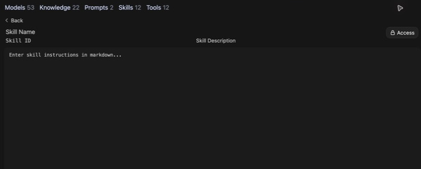

- Open Workspace → Skills → Create.
- Enter a name, identifier, and description that explain when to use it.
- Write instructions, review Access, and choose Save & Create.
Skills & Tools
Add tools and reusable instructions for teaching and research
CUNY AI Lab Sandbox
Developed by Stefano Morello and Zach Muhlbauer
Workshop Agenda
- Confirm Skills and Tools access
- Choose recurring procedures
- Write skill instructions
- Attach skills to models
- Inspect tool calls and results
- Test models with skills and tools
Before attending, confirm individual access, Sandbox sign-in, and Skills and Tools access. Creating or editing resources also requires Workspace access. Knowledge access is needed only when your task uses a collection.
Review Previous Work
Open your custom model and review its system prompt. Choose a procedure you use in teaching or research.
Write steps for your procedure, save them as a skill, attach it to your model, and test it.
Bring a knowledge collection if your procedure requires searching documents.
Choose Procedures
- For teaching, guide a student through a source one question at a time.
- For research, compare a claim with its source or apply a codebook to an excerpt.
- Define what a successful response would show before writing instructions.
Write steps another person can follow and check.
Define Skills
Skills contain reusable Markdown instructions for tasks or procedures.
Models receive a skill’s name and description and can load its full instructions when needed.
Describe when to use your skill and which steps to follow.
Create Skills

Attach Skills
- Open Workspace → Models and edit your model.
- Select your skill under Skills.
- Set Function Calling to Native under Advanced Parameters.
- Select Save & Update and test a request that uses your skill.
Use a model that supports tool calling.
Compare Responses
Repeat a request before and after attaching your skill. Keep base model, sources, and system prompt unchanged.
- Did your model follow your instructions?
- Did it pause where you specified?
- Did it preserve evidence and uncertainty?
Enable Tools

A tool runs an operation, such as a search, a calculation, or a search within a knowledge collection.
Open Integrations beside + to choose tools for this chat. Attach reusable tools under Tools in your model editor.
Availability depends on account permissions, configuration, and model support.
Tools & Skills
- Skills
- Reusable instructions for tasks or procedures.
- Tools
- Operations such as web search, code execution, or database queries.
Test a request that needs your skill or tool. Check what your model used and whether its response is correct.
Example 1
Establish Stasis
Composition — Stasis Theory
Composition & Writing
Original Instructions
Starting PointWhen a student is developing a research topic, walk them through four stages — conjecture, definition, quality, and policy — to help them narrow their question. Ask one stasis at a time.
- Model walks through all four stages in a single response instead of pausing at each
- No steps connecting a student’s topic to each stasis question
- Treats stasis as a checklist rather than a deliberative process
- No pause for students to revise their question
- Does not help students identify which stasis their argument addresses
Composition & Writing
Revised Instructions
StrongSkill: Establishing Stasis for a Research Topic
When a student is developing or narrowing a research topic, follow this procedure:
Procedure:
1. Ask the student to state their topic in one sentence. Do not evaluate or refine it yet.
2. Conjecture: “What has happened or is happening that makes this worth investigating?” Wait for their answer. Use what they say to sharpen the next question.
3. Definition: Point to a key term in their response. “How are you defining [term]? What kind of problem is this — legal, ethical, empirical, cultural?” Wait.
4. Quality: “What’s at stake, and for whom? What makes this serious enough to argue about in an 8-page paper?” If their scope is too broad, ask them to name one specific population or context. Wait.
5. Policy: “What should be done, and by whom?” Help the student see whether their argument is making a factual claim, a definitional claim, a value judgment, or a policy proposal.
6. Ask: “Which of these four questions does your argument most need to answer?” Guide them toward a thesis grounded in that stasis.
Format:
Your topic: [student’s stated topic]
[One stasis question, tied to a specific phrase the student used]
[1–2 sentences explaining why this question matters for their project]
Example 2
Examine Documents
History — Source Analysis
History
Original Instructions
Starting PointWhen a student asks about a primary source, retrieve it from the knowledge collection and walk them through its rhetorical situation using SOAPS. Ask questions one element at a time rather than summarizing.
- Paraphrases source material without quoting uploaded documents
- No procedure for retrieving and presenting specific passages as evidence
- Rushes through all SOAPS dimensions in a single response
- Student receives a finished reading rather than a structured inquiry
- No requirement to support interpretations with quotations
History
Revised Instructions
StrongSkill: Sourcing a Primary Document
When a student asks about or encounters a primary source from the course, follow this procedure:
Procedure:
1. Retrieve the document from the knowledge collection. Quote a key passage — do not paraphrase or summarize.
2. Present the passage in a block quote with its metadata (title, date, author) drawn from the uploaded file.
3. Ask: “Who created this document, and what was their position or stake?” Wait for the student’s answer.
4. After they respond, point to a specific phrase in the quoted passage that supports, complicates, or challenges their answer.
5. Ask: “When and where was this written? What was happening at that moment that shaped what the author could say?” Wait.
6. Ask: “Who was the intended audience? How does knowing that change what the document means?” Wait.
7. After all three sourcing moves, ask: “Given what you now know about the author, the moment, and the audience — what can this source tell us, and what can’t it?”
Format:
> [quoted passage from uploaded source]
— [Author], [Title], [Date]
[One sourcing question]
[1–2 sentences connecting the question to a specific phrase in the passage]
Example 3
Analyze Images
Literature — Cinematic Mise-en-Scène
Literature & Cultural Studies
Original Instructions
Starting PointWhen a student shares a film still or visual artifact, guide them from describing formal elements — composition, lighting, framing — toward interpreting how those choices construct meaning in context.
- Describes images without asking students what they notice
- No scaffolding from observation to formal analysis to interpretive claim
- Treats all visual elements at once rather than isolating one per turn
- No questions prompting students to observe and interpret
- Does not connect visual details with interpretive claims
Literature & Cultural Studies
Revised Instructions
StrongSkill: Reading Cinematic Images
When a student uploads a film still, photograph, or visual artifact — or asks about an image from the knowledge collection — follow this procedure:
Procedure:
1. Use an uploaded image only when the selected model can inspect images. If the visual is unavailable, ask the student to upload it or describe it. Do not assume text retrieval from a knowledge collection provides the original image.
2. Ask: “What do you notice first?” Let the student describe before you respond.
3. After their description, direct attention to one formal element they haven’t mentioned — composition, lighting, color, framing, depth of field, or gaze. Ask what it does.
4. Ask how that formal choice shapes the viewer’s experience. Move from what is in the frame to how the image is constructed.
5. Introduce context: ask the student to connect the visual choices to the cultural moment, genre, or argument of the work. If relevant context exists in the knowledge collection, quote it.
6. Guide them toward an interpretive claim: “Based on what you’ve observed, what argument is this image making?”
Framework: Description → Analysis → Interpretation
• Description: What is literally in the frame?
• Analysis: How do formal elements (light, angle, placement) create meaning?
• Interpretation: What claim can the student make, grounded in visual evidence?
Write Skills
Structure
Structure Skills
Use three parts to draft this skill.
- Trigger — When should this skill activate?
- Procedure — Which steps should your model follow?
- Format — How should responses appear?
Component 1
Define Triggers
Describe when to use your skill. Test a relevant request and an unrelated request.
- What student action starts this workflow?
- Does it activate when they share a draft? Ask about a source? Upload an image?
- Should it run automatically, or only when students ask?
Skill: [Skill Name] When a student [specific action or input], follow this procedure:
Your turn Name a student action your skill should respond to.
Component 2
Write Procedures
Write numbered steps specifying what your model should do and when it should pause.
- What should happen first? What comes next?
- When should your model wait for a student response?
- Should it quote, cite, or reference specific materials?
Procedure: 1. [First step — what does the model do or ask?] 2. [After the student responds, what comes next?] 3. [Continue these steps — specify when to wait for a student response] 4. [Final step — synthesis, next action, or handoff]
Your turn Write 3–5 numbered steps in an order you would follow yourself.
Component 3
Specify Format
Specify how responses should be organized.
- Should responses quote student writing?
- Should each response end with a question?
- How long should a response be?
Format: > [quoted excerpt from student work or source document] [1-2 sentences: what you observe] [One question for the student]
Your turn Write a template showing how each response should be organized.
Hands-On
Draft Skills
Choose a teaching or research procedure and write steps that another person can inspect.
Exercise
Choose Procedures
Which procedure would you like to use?
Establish Stasis
Narrow a research topic one question at a time
Examine Documents
Quote, then ask who, when, for whom
Analyze Images
Describe → analyze → interpret
Choose Another Procedure
Use a procedure from your teaching or research.
Draft It
Write Instructions
Describe when to use your skill, which steps to follow, and how responses should appear.
Define Triggers
What student action starts this?
Write Procedures
Write 3–5 steps and specify when to pause.
Specify Format
What does each response look like?
Skill: [Name] When a student [trigger action], follow this procedure: Procedure: 1. [First step] 2. [Second step — specify when to wait for a student response] 3. [Third step] Format: > [quoted text from student or source] [Observation in 1-2 sentences] [One question]
Check Interpretations
Use this draft to check an interpretation against a source passage.
When the user asks whether a passage supports a claim, ask for both if either is missing. 1. Quote the relevant passage and identify its source. Do not invent missing metadata. 2. State what the passage directly supports. 3. Identify an inference or competing reading that needs further evidence. 4. Ask one question that would help resolve the difference, then wait. Keep the quotation separate from your interpretation. If the source is unavailable, explain what cannot be checked.
Test it with supported, overstated, and unsupported claims from public or approved material.
Test Skills
Create your skill, attach it to your custom model, and confirm native function calling. Save your model and start a new chat.
- Send a request that should use your skill.
- Reply once and check whether your model follows your next step.
- Send an unrelated request and check whether your skill is used unnecessarily.
Save results before revising your skill’s description or instructions.
Inspect Tool Results
Use a search tool to find a source relevant to your question. Open its link and check whether it supports your model’s claim.
With an available code tool, use a small calculation whose answer you can check independently.
Inspect tool calls and results. Check whether a tool ran when your model says it searched or calculated.
Check Calculations
Run this calculation with Code Interpreter.
Use Code Interpreter to calculate the median of [3, 8, 8, 12, 19]. Show the calculation and report whether the tool ran.
Expected median is 8. Check calculation output and final answer. If execution fails, your model should report that.
Record Test Results
| Record | Include |
|---|---|
| Configuration | Model ID, system prompt, documents, skill instructions, and enabled tools. |
| Action | Request, instructions used, tool calls and results, and final response. |
| Judgment | What you expected, what happened, and any change you plan to test. |
Before sharing, confirm others can access your model, collections, skills, and tools. Repeat relevant tests after updates.
Repeat Tests
- Save prompts, sources, skills, and tool settings
- Compare expected and observed behavior
- Revise instructions from recorded failures
- Verify shared access with intended users
- Retest after model or tool updates
Browse system-prompt examples · Return to Compose System Prompts